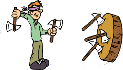

Do not forget to breathe
I admit I was wrong and committed mistakes.
So basically I did some mistakes recently. Hopefully nothing major.
In any case, once the milk is on the ground…. it is on the ground, no matter how sorry about it you are.
Important to this stage is to take your lessons out of it and focus on the future.
And the lesson for me is: do not forget to breathe.
It is always the same point. The one I stuggle much dealing with.
I have warm blood and this hinders me at times to wait and be patient and deal with situations as a surgeon and not as a houthakker.
Anyways; make sure that the lesson is learned. Keep it at the core of your very being.
Your warm blood is your strength but it is a double-edge sword… I recently learned that part of it is chemistry and with age, as biological structure of your brain changes, it should get better.
Well, monitor that change as well - with the classical boiling the frog issue - and make sure that when that happens, experience will compensate the loss in energies.
In any case, be mindful; improve at dominating your elements and: do not forget to breathe.